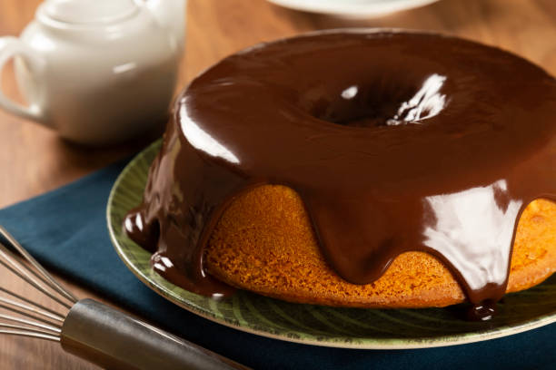

RECEITA DE BOLO DA MINHA MÂE
Olá, meu nome é Domingos, e vou te ensinar a receita de bolo da minha mãe. Para começar, você precisa prestar bastante atenção no que eu vou dizer e colocar as mesmas quantidades de ingredientes e amor. Bom apetite!
Modo De Preparo
Para começar, é necessario algumas informações sobre esse bolo, até por que nao informei nada sobre ele antes.
- Sabor Do bolo
- Tempo Minimo
- Habilidades Necessarias
Ingredientes
- 3 cenouras médias, descascadas e picadas
- 3 ovos
- 1 xícara de óleo
- 2 xícaras de açúcar
- 2 xícaras de farinha de trigo
- 1 colher de sopa de fermento em pó
- 1 pitada de sal
Ingredientes Para a Corbetura De Chocolate
- 4 colheres de sopa de manteiga
- 4 colheres de sopa de cacau em pó
- 6 colheres de sopa de leite
- 2 xícaras de açúcar
- 1 colher de chá de essência de baunilha
E por fime o modo de preparo que consiste basicamente em:
- Pré-aqueça o forno a 180°C. Unte uma forma com manteiga e farinha, ou forre com papel manteiga.
- No liquidificador, bata as cenouras, os ovos e o óleo até obter uma mistura homogênea.
- Em uma tigela grande, misture o açúcar, a farinha de trigo, o fermento em pó e o sal. Adicione a mistura do liquidificador e mexa bem até incorporar todos os ingredientes.
- Deite a massa na forma preparada e leve ao forno pré-aquecido por aproximadamente 40-45 minutos, ou até que um palito inserido no centro do bolo saia limpo.
- Enquanto o bolo assa, prepare uma cobertura de chocolate. Em uma panela, derreta a manteiga em fogo baixo. Adicione o cacau em pó e o leite, mexendo constantemente até obter uma mistura aquosa.
- Adicione o açúcar e continue pensando até que o açúcar esteja completamente dividido e a cobertura esteja brilhante.
- Retire do fogo e adicione a essência de baunilha, misturando bem.
- Assim que o bolo estiver assado e completamente resfriado, despeje uma cobertura de chocolate sobre ele.
- Espalhe a cobertura uniformemente sobre o bolo e deixe-a firmar antes de cortar e servir.
- Sirva e aproveite este delicioso bolo de cenoura com cobertura de chocolate!
E se no final, você tiver feito tudo da maneira correta, você vai ter um bolo parecido com esse abaixo ↓

Se quiser ver uma carinha Feliz, CLIQUE AQUI.